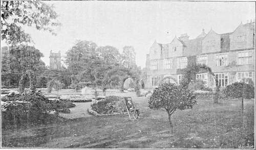

Kitchen Gardening Under Elizabeth And James I. Part 3
Description
This section is from the book "A History Of Gardening In England", by Alicia Amherst. Also available from Amazon: A History Of Gardening In England.
Kitchen Gardening Under Elizabeth And James I. Part 3
Both the ordinary artichoke (Cynara Scolymus) and the cardoon (Cynara Cardunculus) were grown, but the latter were never as popular in England as they were abroad, probably because "we cannot yet find the true manner of dressing them, that our country may take delight therein." ‡ The artichokes grown in England were considered the best, and plants were exported to Italy, France, and the Low Countries.
Greater attention was paid to the culture of melons. All gardening books give instructions for growing them, apparently without great success, for Parkinson is honest enough to say, " Muske melons have been begun to be nursed up, but of late dayes in this Land, wherin although many have tried and endeavoured to bring them to perfection, yet few have attained unto it." The seeds were planted in April, in a hotbed, and carefully covered with straw; when they had sprung up they were given an hour's sun in the morning, and re-covered, then, when they "have gotten four leaves," are planted on a well-manured sloping bank in a sunny sheltered place, and covered with a pot, or some shelter, until they were well grown. Sir Hugh Platt writes, " When your mellons are as big as Tennis balls, then if you nip off at a joynt, all the shoots that are beyond them, the mellons will grow exceeding great." He also gives a direction learned from " Mr. Nicholson Gardiner." " Lay your young Mellons upon Ridge-tiles to keep them from the ground, and for reflection," and he tells us that the seed should be steeped in milk for twenty-four hours before sowing. Parkinson says the best seed came from Spain, and not from France, but some seed was saved in England. Gerard saw some good melons at the " Queene's House at St. James," grown by Master Fowle, and also "great plenty" at Lord Sussex's at " Bermondsey by London." It was usual to eat them with pepper and salt, and " to droun them in wine for feare of doing more harme." * These " musk-melons" are Cucumis melo, the same as are now termed melons, and they were " of a russet colour and green underneath.....deep furrowed and ribbed . .the inward substance is yellow, which only is eaten." † " Melons or pompions," include pumpkins and gourds of all kinds. These were eaten especially by the poorer classes, cooked in various ways. Parkinson says they eat as "a dainty dish," pompions, the seeds taken out and filled with pippins, and baked altogether.
* Johnson's Edition of Gerard's Herbal, 1633. † Ibid.
‡ Parkinson. "1 oz. of Cardone" seed in 1761 cost 1s.—Household-Accounts, Stonor.
Vegetables then did not have at all the same relative value as nowadays ; some which are now scarcely grown, such as skirrets, holding a prominent place, while others were not so much valued. The heading of a chapter in Hill's Gardener's Labyrinth will illustrate this fact. " What care and skill is required in the sowing and ordering of the Buckshorne, Strawberrie and Mustarde Seede." Buckshorne is Plantago coronopus, and was largely used in salads, " especially in sallets in the sommer time, although the same have no apt succour nor taste." The strawberry, Hill continues, requires " small labour, but by dilligence of the Gardener, becommeth so great, that the same yeeldeth faire and big Beries as the Beries of the Bramble in the hedge. . . . The Berries in sommer time, eaten with creame and sugar, is accounted a great refreshing to men, but more commended, being eaten with wine and sugar." Mustard was grown only for the seeds, not for the use of the seedlings in salad. The seed pounded with vinegar was eaten " with any grosse meates, either fish or flesh." * Hill gives a long list of complaints it will cure. "The juice taken diuers mornings fasting doth procure a good memorie." He recommends it to be dropped into the eyes to remove dimness of sight, one would have thought rather to ensure an opposite effect. The powder of the seeds taken as snuff " marvelously amendeth the braine"!
* Parkinson. † Ibid.
Nauewes and turnips, though spoken of separately, seem to be one and the same thing, as Hill says of them—" The propertie many times of the ground dooth alter the Nauewe into a Turnup, and the Turnup into a Nauewe." He recommends poppies to be " sowne in the beddes among colewortes," which does not speak well for the cabbages. Beans were still largely grown by the poorer classes, but kidney beans, of which Gerard depicts eight sorts, two from America, were " a dish more oftentimes at rich men's tables than at the poor." Peas were sown at midsummer for autumn use, and also in August and September for the following spring. Dried peas were used at "sea for them that go long voyages." The rouncial was still much grown, also the green and white hasting, called so because of its earliness. The following were also popular varieties : the sugar pease, the spotted, the gray, the pease without skins, and the Scottish or tufted, or the rose, and the early French, "which some call the Fulham Pease, because those grounds thereabouts do bring them soonest forward for any quantity, although sometimes they miscarry by their hast and earliness."* The " Rams ciche " or " ciche pease " (Cicer arietinum) was occasionally grown. Turner says he had seldom seen it in England, and Gerard says it "is soun in our London gardens, but not common." This " Chick Pea" never became popular. Miller, writing a hundred years later, says it was much grown in France and Spain, but rarely sown in England.
* Gerard.
Any practical gardener, if asked the use of an orchard, would, doubtless, reply that the use is to ensure a sufficient supply of fruit; but Lawson tells us that no one can deny, " that the principal end of an orchard is the honest delight of one wearied with the workes of his lawful calling"; and, again, he speaks from experience, being himself an old man, and says that the orchard "takes away the tediousnesse and heavie load of three or four score years." What a truly magical power must an Elizabethan orchard have possessed! Such an introduction makes one keen to leave the kitchen-garden, and traverse again the flower-garden, on the north-east side of which we should probably find the orchard. It was thoughtfully put there when it was possible, that the fruit trees might help to shelter the more tender plants of the flower garden, and some tall forest trees, "Walnuts, Elms, Oaks or Ashes," were planted at a good distance beyond, to shelter but not overshadow the orchard. " The extent of an orchard was much larger than that of a garden, and it would require more cost, which everyone cannot undergo," to build a brick wall round it. Instead of this, mud walls, wooden palings, or a quickset hedge were substituted. But Parkinson recommends a wall of brick or stone, in spite of the expense, " as the gaining of ground and profit of the fruit trees planted there against, will in short time recompense that charge." " On the south wall your tenderest and earliest fruits, as Apricocks, Peaches, Nectarins, and May or early cherries, should be set on the east and north, and on the west, plums and quinces, spread upon and fastened to the walls by the help of tacks and other means to have the benefit of the immediate reflexe of the sunne." * This arrangement of the walls was suited only to the southern counties. Lawson writes that in his county (Yorkshire) the best fruit to grow was " Apples, Pears, Cherries, Filberds, red and white Plums, Damsons and Bullaces," and he further adds, as a warning, " we do not meddle with apricockes, nor peaches, nor scarcely with quinces, which will not like in our colde parts." Allusions to the fruit trees trained against a wall occur in the poems and plays of the time. Marlowe mentions cherries on a wall, and Ben Jonson in Every Man in his own Humour (act i. scene 1) makes Wellbred write to Edward Knowell, " Leave thy vigilant father alone to number over his green apricots evening and morning on the north-west wall." The idea of thus growing fruit was of recent date. Sir Hugh Platt, writing in 1600, says, " Quinces growing against a wall, lying open to the sun and defended from cold winds, eat most deliciously. This secret the Lord Darcey brought out of Italy, quaere, would this suit of all other fruits ? "
* Parkinson.
Castle bromwich.
Continue to:
- prev: Kitchen Gardening Under Elizabeth And James I. Part 2
- Table of Contents
- next: Kitchen Gardening Under Elizabeth And James I. Part 4